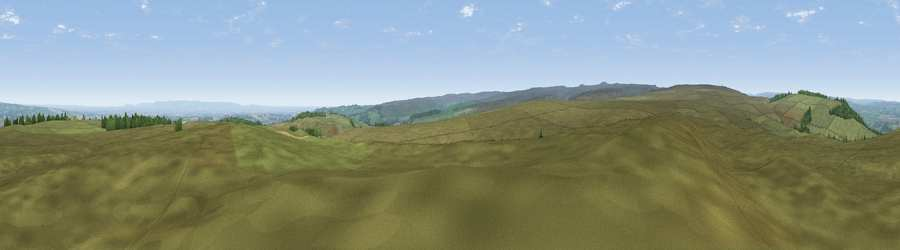

Viewpoint near East Witton
#9567 in England · top 13% of its area beats it · near East Witton · open accessWhere it is
The exact computed spot (SE 14775 83325). Click the marker for map links.
Public access: this spot lies on mapped open-access land (CRoW Act 2000) — you may roam here on foot. Computed from Natural England's CRoW access layer and OpenStreetMap rights of way — not the legal definitive map. Always verify locally.
The view, rendered

A 360° render of this exact spot computed from the terrain model, tree cover and land cover — summer colours, afternoon light, calibrated against photographs of famous viewpoints. Real trees, hedges and buildings will differ in detail.
The panorama
Grey silhouette: terrain skyline in each direction (720 bearings, Earth curvature and refraction included). Dashed green: skyline with trees (+15 m) and buildings (+8 m) as obstacles. Blue strip: how far the ground is visible on each bearing.
Where the view opens
Wedge length = distance to the farthest visible ground on that bearing (vegetation-aware). Rings at 10, 25 and 50 km.
What fills the view
89% grassland · 6% cropland · 4% woodland
Angular shares of the visible panorama (visual magnitude), not map area. Landscape diversity 0.19 (0–1 Shannon).
Key numbers
More beautiful places nearby
The staircase of upgrades: each row has a higher view potential than everything closer. Driving times are estimates from straight-line distance, calibrated against real road routing — check an actual route before setting out.
| Place | Direction | Drive | Score |
|---|---|---|---|
| Viewpoint near East Witton | NNE · 1 km | ~3 min | 72.0 |
| Viewpoint near East Witton | NNW · 2 km | ~5 min | 77.8 |
| Viewpoint near Kirby Knowle | E · 31 km | ~48 min | 80.5 |
| Beacon Hill | ENE · 35 km | ~53 min | 84.7 |
| Carlton Bank | ENE · 42 km | ~61 min | 85.1 |
| Roseberry Topping | NE · 52 km | ~73 min | 85.8 |
| Viewpoint near Lazenby | NE · 55 km | ~76 min | 86.4 |
| Warsett Hill | NE · 66 km | ~89 min | 86.8 |
54.24540, -1.77477 · source: screening · position refined by local search. Computed location — check access rights before visiting.